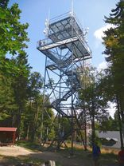
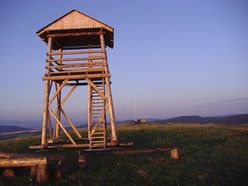
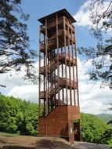
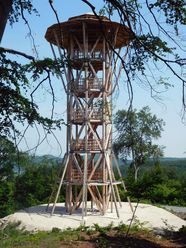
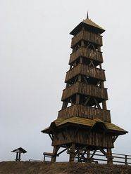
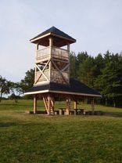
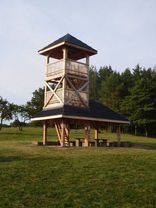
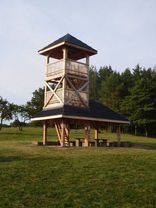
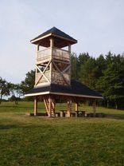

    
 



Tradiční region: Trenčianska župa
Okres: Považská Bystrica
Geomorfologická jednotka: Javorníky
GPS: 49°18'54.258"N, 18°20'6.617"E
Stratenec je méně výrazný vrchol v hlavním hřebeni Javorníků, asi na půli cesty mezi Veľkým a Malým Javorníkem. Sympatická dřevěná rozhledna zde byla vztyčena na jaře roku 2020, přičemž nahradila původní rozhlednu z roku 2008. Nabízí zajímavé rozhledy především na českou stranu - v plné kráse vidíme Vsetínské vrchy s Čartakem a Vysokou i kompletní pásmo Moravskoslezských Beskyd. Výhledy na slovenskou stranu dosti zarostly, vidět je část Javorníků, Súľovské vrchy a částečně Malou Fatru. Rozhledna má dvě podlaží a vystoupáme na ně po 24 schodech. Schodiště je sice strmé, ale stupně jsou širší, na rozdíl od původních žebříkových. Plošina je výšce asi pěti metrů.
Ze slovenské strany lze vystoupat od autobusové zastávky Papradno, Podjavorník, která zakončuje prakticky 20 km dlouhou dolinu potoka Papradnianka; autobusy z Považské Bystrice sem zajíždějí zhruba čtyřikrát denně i o víkendu. Na vrchol nás dovede žlutá značka, převýšení činí 450 metrů. Z české strany jedinou víkendovou možností je zajet na konečnou zastávku Velké Karlovice, Podťaté, Světlá, kam zajíždějí přímé autobusy ze Vsetína. V pracovní dny lze využít méně frekventovanou boční dolinu Tísňavského potoka. V každém případě musíme počítat s větším převýšením a spíše ojedinělými možnostmi občerstvení (např. horský hotel Fran v oblasti Kasáren).


snímky: vlastní (prosinec 2020)
Turistická mapa VKÚ 1:50.000 č.108 - Javorníky, Púchov.

Region cestovního ruchu: Stredné Považie
Okres: Trenčín
Geomorfologická jednotka: Považský Inovec
GPS: 48°46'28.783"N, 18°2'30.275"E
Ocelová meteorologicko-telekomunikační věž (obdobná Šachtičce nad Banskou Bystricou) na vrcholu Inovce s názvem Helena je majetkem společnosti SWORAD s.r.o. a turistům byla zpřístupněna v prosinci 2015. Plošina ve výšce 16 metrů (90 schodů) poskytuje daleký kruhový výhled.
Je pravda, že jsem měl limitující letní opar, přesto mě výhled trochu zklamal - jednak není kruhový (brání hřeben) a jednak chybí dostatečná výška nad okolní stromy. Pěkný výhled je především k jihu (na jižní Moravu, Malé Karpaty a do Rakouska) a velmi pravděpodobně je možné při jasném výhledu zahlédnout Alpy.
Nejsnazší přístup je ze sedla Mníchova Lehota ŽST (vlaky na trati Trenčín - Chynorany ovšem jezdí tak špatně, že je třeba se spolehnout na autobus) anebo po zelené TZT z obce Selec, kam zajíždí několik párů autobusů i o víkendu. Občerstvení je možné na horské chatě Pod Inovcom.


snímky vlastní (září 2016)
Turistická mapa VKÚ 1:50.000 č.130 - Považský Inovec; Piešťany.

Tradiční region: Horné Považie
Okres: Považská Bystrica
Geomorfologická jednotka: Javorníky
GPS: 49°15'5.900"N, 18°20'49.879"E
V září 2022 byla dokončena dřevěná rozhledna v katastru Horné Marikové na vrchu Orgoňova Kýčera v Javorníkách. Vyhlídková plošina se nachází ve třetí úrovni ve výšce 7 m. Na rozhledně jsou umístěny erby obcí, jejichž katastry se zde sbíhají - Horné Marikové, Dolné Marikové a Papradna. Vedle rozhledny se nachází přístřešek s posezením a velká dubová socha staroslovanského místního obyvatele Orgoně, jehož jméno se k tomuto vrcholu váže. K rozhledně dojdeme z centra Horné Marikové po žluté a následně modré značce; na čtyřech kilometrech překonáme převýšení téměř 500 metrů.
Na vyhlídkovou plošinu vylezeme po 32 schodech; kromě prvních pěti jsou tak strmé, že jde prakticky o žebříkové stupně. Navzdory vysoké nadmořské výšce je rozhledový potenciál poměrně malý. Rozhledna je vetknutá mezi stromy, které ji však převyšují, a umožňují tak jen omezený výhled v úhlu zhruba 150°. Například z Javorníků nevidíme téměř nic, pouze údolí s horní částí Horné Marikové hluboko pod sebou a nižší zalesněné vršky za ním. Pěkný dohled je však za řeku Váh - vidíme dlouhý pás hor od severovýchodu (Rozsutec, Veľký Kriváň, Martinské hole) k jihozápadu (Strážovské vrchy, Považský Inovec, Vršatská bradla). Ani tento pohled však není úplně celistvý vzhledem ke skupině smrků uprostřed. Celkový dojem bohužel neodpovídá vynaložené námaze a poměr "cena - výkon" patří k těm dosti slabým.


snímky vlastní (květen 2023)
Turistická mapa VKÚ 1:50.000 č.108 - Javorníky; Púchov.

Tradiční region: Trenčianska župa
Okres: Púchov
Geomorfologická jednotka: Biele Karpaty
GPS: 49°8'9.645"N, 18°15'1.429"E
Dohňany jsou podhorskou obcí mezi Horním Lidčem a Púchovem. Dřevěná rozhledna na protáhlém vrcholu nad obcí byla vystavěna v listopadu 2009 v rámci česko-slovenského projektu - Operačního programu přeshraniční spolupráce SR/ČR 2007-2013; vedoucím partnerem projektu je Sdružení obcí Hornolidečska. Bohužel vzhledem až příliš nápadně připomíná sousední českou rozhlednu na Královci nad Valašskými Klobouky.
Rozhledna je přístupná po 13 km dlouhé okružní naučné stezce z Dohňan (Dohňany - Lazovská skála - Čertova skála - Tľstá hora - skála Vieska - Dohňany). Je možný i přímý, dosti strmý výstup po široké lesní cestě. Nabízí výhledy na slovenskou část Javorníků, Malou Fatru včetně Martinských holí, Vršatecké bradla, Považský Inovec i nejvyšší vrch Súľovských skal Veľký Manín (891 m). Bližší pohledy jsou na město Púchov, přímo pod rozhlednou pak obec Dohňany a z druhé strany hluboké horské údolí s obcí Zubák.


snímky: H. Holubářová (1-3), vlastní (4, prosinec 2009)


snímky: obec Dohňany, použito se svolením starosty
Turistická mapa VKÚ 1:50.000 č.108 - Javorníky; Púchov.

Tradiční region: Záhorie
Okres: Myjava
Geomorfologická jednotka: Biele Karpaty
GPS: 48°49'3.560"N, 17°25'38.578"E
Žalostiná je menší dřevěná vyhlídková konstrukce s 20 schody na oblém, nezalesněném vrcholu poblíž hranice s Českou republikou. Poskytuje výhledy na obec Vrbovce a okolní hornatinu - Bílé Karpaty, Vršatecké bradlá, Malé Karpaty. Vyhlídková plošina je ve výšce necelých 4,5 m, což spolu s umístěním na vrcholu splňuje kritérium turistické rozhledny.


snímky: A. Svoboda (1), A. Průšová (2-3), zbytek vlastní (červenec 2010)
Turistická mapa VKÚ 1:50.000 č.149 - Chvojnická pahorkatina, Skalica.

Tradiční region: Trenčianská župa
Okres: Myjava
Geomorfologická jednotka: Bílé Karpaty
GPS: 48°46'33.869"N, 17°29'51.065"E
Jednoduchou dřevěnou rozhlednu vybudovala obec Vrbovce na atraktivním otevřeném návrší Kamenec v létě 2023. Rozhledna je před kolaudací (srpen 2023) a po zpřístupnění poskytne rozhledy na Myjavu, Bílé Karpaty, Malé Karpaty, Považský Inovec a na hrady Branč, Čachtice a Tematín.
Turistická mapa VKÚ 1:50.000 č.129 - Malé Karpaty, Bradlo.

Tradiční region: Horná Nitra
Okres: Prievidza
Geomorfologická jednotka: Strážovské vrchy
GPS: 48°40'28.661"N, 18°29'18.009"E
Esteticky atraktivní drobná konstrukce, která však podstatně zlepšuje výhled do krajiny, byla postavena v roce 2017 nad obcí Bystričany na úbočí Drieňového vrchu. Geomorfologicky patří do Strážovských vrchů, podcelku Nitrické vrchy. Bystričany jsou dostupné vlakem na trati Nitra - Prievidza, odtud půjdeme k termálnímu koupališti Chalmová a zde se napojíme na modrou značku. Po celkem třech kilometrech chůze dorazíme k rozhledně.
[Ladislav Khandl]:
Na malú rozhľadňu možno prísť od železničnej stanice Bystričany do časti Chalmová, za mostom cez Nitru treba ísť doprava proti toku rieky do oploteného areálu termálneho kúpaliska Chalmová (30 min). Odtiaľ po pravej vetve modro značkovaného okružného chodníka k rozhľadni (1 h). Návrat späť po rovnakej trase (30 min) alebo oblúkom cez Sedlo pod Drieňovým (90 min).
Výstup na šesťhrannú 6,5 m vysokú drevenú vežu umožňuje rebrík s 11 priečkami. Z vyhliadkovej plošiny vo výške 3,1 m je krásny polkruhový výhľad (v smere od západu po severovýchod bránia výhľadu svahy Drieňového vrchu). Na severovýchode sa črtá Elektráreň Nováky a vpravo od nej obec Kamenec pod Vtáčnikom. Ďalej je vidieť pohorie Vtáčnik s Bielym kameňom, Vtáčnikom a na juhovýchode so skalnatým Buchlovom. Nasledujú vrchy Tríbeča a na juhozápade vidieť Veľký vrch poznačený činnosťou v lomoch.


snímky: J. Marťáčik (1-2), vlastní (3-5, listopad 2018)
Turistická mapa VKÚ 1:50.000 č.131 - Vtáčnik; Horná Nitra.

Tradiční region: Horná Nitra
Okres: Partizánske
Geomorfologická jednotka: Tribeč
GPS: 48°34'17.010"N, 18°22'18.637"E
Zajímavě položenou rozhlednu můžeme od jara 2021 navštívit v pohoří Tribeč, a to v jeho nižší severní části. Návrh na její výstavbu vznikl v občanském sdružení ve Veľkém Klíži Tu žijeme; zhotovitelem je pan Jozef Poništ se spolupracovníky. Rozhledna je dřevěná s kovovým ukotvením a zábradlím. Celkovou výšku má 16 metrů, vyhlídková plošina se nachází ve výšce 11 metrů a vyjdeme na ni po 56 schodech. Nachází se na nevelké mýtince a výstup na plošinu i pobyt na ní jsou pocitově velice příjemné. Rozhled poskytuje bohužel jen do tří stran - od severu k východu je výhled nemožný, takže nevidíme ani Partizánske, ani hřeben Vtáčniku. Pěkný rozhled je naopak k severozápadu, kde defiluje celé pohoří Považský Inovec, a okolní pohoří Tribeč. Do daleka je pak vidět také k jihu, přes Topoľčany údolím řeky Nitry.
K věži nejsnáze dojdeme z části Veľkého Klíže, Klížského Hradiště (příjemná hospoda). Z návsi vyjdeme po modré značce, od ní se však kousek za obcí odpojíme. Odbočka je dobře označená, dostatečně široká a také je intuitivní - stoupáme proti vrstevnicím do lesa. Z rozhledny lze sejít na modrou značku do Brodzan (autobus) nebo hezkým listnatým lesem na žlutou značku směr Partizánske (nutné orientační pomůcky). Po projití města s monumentálním parkovým náměstím dojdeme k nádraží, kde se lze dobře najíst a osvěžit výborným pivem z místního minipivovaru.


snímky: vlastní (srpen 2021)
Turistická mapa VKÚ 1:50.000 č.131 - Vtáčnik; Horná Nitra.

Tradiční region: Horná Nitra
Okres: Prievidza
Geomorfologická jednotka: Strážovské vrchy
GPS: 48°47'7.692"N, 18°33'52.416"E
Třicetimetrová konstrukce stezky v oblacích nad lázeňským městem Bojnice byla otevřena v září 2018. Jakkoli jsem vůči podobným projektům skeptický, tento se povedl. Stavba je citlivě zasazená do krajiny (na rozdíl od nechutného monstra nad českou Dolní Moravou) i do přírody (pokáceno bylo jen nezbytné minimum borovic, které utvářejí příjemné prostředí). Výhledově je skvělá (např. naše Janské Lázně jsou proti Čajce zcela zbytečný projekt), předčí i šumavskou stezku v bavorském Neuschönau. Faktem ale je, že jsem měl štěstí na počasí i liduprázdný areál.
Nepočítám-li orientačně jednoduchou asfaltku od parkoviště, k rozhledně lze dojít buď od bojnického zámku přímo vzhůru lesem (cesta není zatím proznačená), nebo z lázní (volně dostupná voda z lehce termálního pramene) po žluté značce. Ta však nevede až k rozhledně, u kapličky poblíž nové prostorné vyhlídkové terasy (mimo sezónu vstup uzamčen) je zapotřebí stočit se poněkud vpravo a napojit se na již zmíněnou asfaltku od parkingu. Z vyhlídkové terasy je nádherný výhled na Bojnice a Prievidzu, Vtáčnik, Strážovské vrchy, část Veľké Fatry, Kremnické vrchy a část Štiavnických vrchů. Rozhled je prakticky panoramatický (asi 300°).


snímky: vlastní (listopad 2018)
Turistická mapa VKÚ 1:50.000 č.131 - Vtáčnik; Horná Nitra.

Tradiční region: Stredné Považie
Okres: Trenčín
Geomorfologická jednotka: Považské podolie / Biele Karpaty
GPS: 48°58´24.8" N, 18°03´45.9" E
Na Považí, na východnom svahu kóty Malý Jelenec (459 m n.m.), postavila Miestna akčná skupina Vršatec zo združených prostriedkov EÚ, samospráv a súkromného sektora v roku 2015 vyhliadkovú vežu, ktorá sa stala druhou najvyššou drevenou vyhliadkovou vežou na Slovensku (po veži Majka vo Východnej). Má celkovú výšku 24,6 m a vyhliadkovú plošinu vo výške 21,2 m. Vedie k nej 117 schodíkov.
Prístup k veži je z Trenčianskej Závady, spojenej autobusovou linkou s blízkou Nemšovou, ktorá má i vlakové spojenie. Po ulici Kúty prídeme ku Gazdovstvu Uhliská, v ktorom sa možno občerstviť, najesť či využiť ďalšie služby (v pracovné dni až poobede a večer). Od areálu vedie dohora kamenistá poľná cesta, najprv juhozápadným, neskôr západným smerom. Na vrchole stúpania nás drevená šípka odkloní doprava na sever na cestu lesom. Výstup trvá 20 minút.
Z veže je pekný výhľad na severovýchod až juhovýchod. V diaľke rozpoznávame najmä Chmeľovú vo Vršatských vrchoch a Strážov, Vápeč či Baske v Strážovských vrchoch.


text: L. Khandl, snímky A. Průšová (1), zbytek vlastní (říjen 2015)
Turistická mapa VKÚ 1:50.000 č. 107 - Biele Karpaty; Trenčín.

Tradiční region: Záhorie
Okres: Myjava
Geomorfologická jednotka: Malé Karpaty
GPS: 48°38'31.600"N, 17°35'55.237"E
Na jar 2017 vybudovali Mestské lesy Brezová pod Bradlom, s.r.o., v rámci Programu rozvoja vidieka 2014 – 2020, podporeného z Európskeho poľnohospodárskeho fondu pre rozvoj vidieka, vskutku unikátnu protipožiarnu monitorovaciu vežu. Je zoskrutkovaná z drevených hranolov, zakončených na oboch koncoch špeciálnym kovaním. Do drážok v dvoch protiľahlých stranách každého hranola sú zapustené oceľové výstužné tyče, spojené s kovaniami. Z týchto dreveno-oceľových hranolov je zmontovaná vyše 20 metrov vysoká štvorpodlažná veža, výstuže však z nej vytvárajú osemuholníkovú stavbu. Vežu hore ukončuje mohutná kruhová strecha so solárnymi panelmi, pod ktorou je v neprístupnom priestore umiestnené monitorovacie protipožiarne zariadenie. Celá stavba pôsobí neuveriteľne impozantne a pritom jemne a elegantne. Teda, klobúk dolu pred projektantom, statikom a stavbármi!
Veža stojí necelých 300 m od sedla Klenovej (425 m), na jeho východnej strane, pri neznačkovanej asfaltke, ktorá vedie od Čierneho blata až na úpätie druhej strany pohoria. Na najvyššiu vyhliadkovú plošinu rozhľadne vo výške 15,3 m vedie 70 schodov. Výhľad z veže do diaľky je od severovýchodu po juhovýchod, na lom nad Hornou Pustou Vsou, na údolie Váhu a Považský Inovec.
Šikovný prístup na vežu je napríklad z Brezovej pod Bradlom, kam premáva autobus z Jablonice, ležiacej na železničnej trati Kúty – Trnava. Od zastávky Brezová pod Bradlom – detský domov (255 m) je rozhľadňa vzdialená 5,6 km. Žlto značkovaná trasa smeruje po Baraneckej ulici k Čiernemu blatu a lokalite Dvoly. Pri prírodnej rezervácii Ševcova skala (chránená je tu najmä prvosienka holá), na rázcestí Dvoly, trasa pretína modrú značku, ku ktorej sa doprava pripája aj žltá trasa. Tu na rázcestí začína červená trasa, ktorá vedie po asfaltke až do sedla Klenovej, potom sa od asfaltky odpája doprava, smeruje do Dolného Lopašova. Zo sedla Klenová je to k veži po asfaltke len pár minút.
[Martin Veselý]: Podle vyjádření investora (ředitele Městských lesů Brezová po Bradlom) jde o monitorovací protipožární věž, která nebyla oficiálně zpřístupněna turistické veřejnosti. Proto k ní také nevedou značené turistické cesty. V okolí rozhledny však žádná upozornění ani zákazy nejsou a za této situace se domnívám, že věž lze akceptovat jako turistickou rozhlednu. Bohužel je ovšem z hlediska rozhledu velmi nevhodně umístěná, a proto místo kochání se krajinou jsem spíše obdivoval zajímavé architektonické řešení věže.


text a snímek 1: L. Khandl, zbytek vlastní
Turistická mapa VKÚ 1:50.000 č. 129 - Malé Karpaty, Bradlo.

Tradiční region: Stredné Považie
Okres: Trenčín
Geomorfologická jednotka: Považské podolie
GPS: 48°55'17.972"N, 18°0'38.565"E
[Ladislav Khandl]: Protipožiarnu vežu zaujímavej konštrukcie postavili spolu s novou lesnou cestou na zalesnenej plochej kóte 390 m na juhozápadných výbežkoch Bielych Karpát, 2 km západne od Horného Orechového. Veža je postavená z drevených nosníkov, vystužených kovovými žrďami, na oboch koncoch opatrených kovovými pätkami na vzájomné zoskrutkovanie prostredníctvom špeciálnych platničiek. Prierez veže je štvorcový, pridané výstužné nosníky však z nej robia osemuholníkovú stavbu. Osem štvorcových vyhliadkových plošín, na ktoré sa vystupuje po drevených schodíkoch, je otvorených. Najvyššia deviata osemuholníková vyhliadková plošina je zhora i zo strán krytá.
Veža sľubuje pekné výhľady najmä na Považie, Strážovské vrchy a Považský Inovec. K rozhľadni zatiaľ nevedie turistická značkovaná trasa. Jedna z možností je odviesť sa z Trenčina autobusom (smer Hrabovka) k zastávke Závažie-cintorín (Orechové). Na toto miesto sa dá prísť aj pešo od železničnej stanice v Trenčíne (3 km), v závere po modrej značke. Odtiaľ ďalej na sever k pol kilometra vzdialenej diaľnice. Podchodom a potom doľava k Orechovskému potoku. Za ním po poľnej ceste, opäť v severnom smere asi 300 m až k veľkému poľu. Po jeho ľavom okraji treba stúpať popri lese až k novej vyhliadkovej besiedke. Za ňou je nová okružná lesná cesta. Treba ísť po nej doľava dohora až k rozhľadni. Spolu od cintorína sú to 3 km.
[Martin Veselý]: Rozhledna je vlastnictvím soukromé firmy IBO (p. Igor Boledovič), odtud pochází i její název. Ačkoli byla postavena již v roce 2019 (viz první snímek Aleny Průšové) a původně měla být zpřístupněná po kolaudaci, zůstala více než tři roky uzavřená. Teprve v listopadu 2022 mně tisková mluvčí města Trenčín sdělila, že po dokončení technologických prací byla rozhledna bezplatně zpřístupněna veřejnosti.
Na vyhlídkovou plošinu umístěnou v 8. patře vystoupáme po 113 dosti strmých schodech. Ocitneme se v pěkné výšce okolo 27 metrů, bezpečně tak přehlédneme okolní les. Poslední, deváté patro slouží technologiím a vstup není dovolen. Na plošině jsou instalovány orientační tabule s názvy jednotlivých vršků. Pěkně dohlédneme na Strážovské vrchy, Bílé Karpaty a Považský Inovec; není však vidět na samotný Trenčín s hradem. K rozhledně snadno dojdeme po žluté TZT od železniční zastávky Trenčín - Zlatovce, u níž se překvapivě nachází rozcestník značek všech čtyř barev. Naše žlutá po chvíli podejde trať, projde místní částí Zlatovce, nadejde dálnici a poté začne stoupat lesem až k rozhledně; převýšení je 200 metrů. Dolů můžeme sejít neznačenou cestou, kterou výše popisuje pan Khandl. Po sestupu do údolí Váhu již sledujeme tok Orechovského potoka, v závěru pak přejdeme po starém železničním mostě (koridorová trať byla přeložena severněji) a zakrátko se ocitneme na hlavním trenčínském náměstí.


snímky: vlastní (únor 2023)


snímky: A. Průšová
Turistická mapa VKÚ 1:50.000 č. 107 - Biele Karpaty; Trenčín.

Tradiční region: Stredné Považie
Okres: Trenčín
Geomorfologická jednotka: Strážovské vrchy
GPS: 48°51'58.696"N, 18°5'16.937"E
Dřevěná rozhledna Dúbravka nad obcí Soblahov u Trenčína byla zpřístupněna veřejnosti 29. listopadu 2015 a její výstavbu má na svědomí spolek Spolok priateľov Soblahova. Na horní plošinu vystoupáme po 27 schodech (16 + 11). Vzhledem k mizerné poloze však nabízí pouze výhled na Soblahov a okolní obce (Trenčianska Turná, Mníchová Lehota, mesto Trenčín), z okolních pohoří pak Strážovské vrchy a Považský Inovec. Výhled není o nic lepší nežli ze země, naopak půjdeme-li cestou vzhůru po louce podél lesa, asi po 600 m se nám naskytne mnohem lepší rozhled, mj. i na Trenčín a Bílé Karpaty.


snímky: A. Průšová (1-5), zbytek vlastní (září 2016)
Turistická mapa VKÚ 1:50.000 č. 107 - Biele Karpaty; Trenčín.

Tradiční region: Horná Nitra
Okres: Prievidza
Geomorfologická jednotka: Hornonitrianská kotlina
GPS: 48°46'56.455"N, 18°39'32.197"E
Pozapomenutou ocelovou rozhlednu z roku 1985 najdeme v rekreačním lesoparku na okraji Prievidzi. Rozhledna je postavena na čtyřech nosných ocelových sloupech, které jsou osazeny a zabetonovány do základů. Na nich je osazena osmiúhelníková konstrukce. Na ochoz, který lemuje ochranné 110 cm vysoké zábradlí, se dostaneme po 21 schodech. Rozhlednu, která byla ve špatném technickém stavu, v roce 2014 zrekonstruovala skupina dobrovolníků a občanské sdružení SPOLU SME PRIEVIDZA.
K rozhledně dojdeme značenou odbočkou od žluté TZT, která začíná na sídlišti Kopanice a prochází poměrně rozlehlým lesoparkem. Od nádraží je šikovné se nablížit MHD na zastávku V. Clementisa (l.14,15,40,44,50,51) na sídlišti Kopanice. Z rohledny vidíme prakticky celé pohoří Vtáčnik a dále na Drieňový vrch nad Nováky, obce Veľkou a Malou Lehôtku, Hradec a část Prievidzy.


snímky: vlastní (říjen 2016)
Turistická mapa VKÚ 1:50.000 č.131 - Vtáčnik; Horná Nitra.

Tradiční region: Trenčianska župa
Okres: Ilava
Geomorf. jednotka: Pováží - oblast mezi Bílými Karpaty a Strážovskými vrchy
GPS: 48°57'43.931"N, 18°9'57.944"E
Skutečně neobvyklou stavbu rozhledového typu najdeme přímo ve městě Dubnica nad Váhom. Znovuobnovená vyhlídková věž, dřevěná na kamenném podstavci, je součástí tzv. Grotty, což je umělý hrádek s jeskyní a rozhlednou nacházející se v parku J.B. Magina, který přiléhá k zámku rodu Ilešháziů. Tento rod je s Dubnicí nerozlučně spjat - dědičnou držbu celého panství získali již v roce 1600 od císaře Rudolfa II. a v roce 1637 se Dubnica stala jejich rodovým sídlem. Tehdejší členové rodu (Mikuláš, Jozef) měli významné postavení na královském dvoře, a usilovali tak sídlo mít co nejhonosnější.
Vyhlídková věž byla postavena jako součást francouzské zahrady a poprvé je zmiňována počátkem 19. století. Byla dlouho v rozvalinách a již se zdálo, že zanikne. Zrekonstruovaná byla podle dochovaných obrázků a nákresů v letech 2005-2010, poprvé otevřena byla 5. 6. 2010 při příležitosti 50. výročí udělení statutu města. Objekt patří Dubnickému muzeu a je přístupný v otvíracích hodinách muzea (viz níže).
Věž má výšku 16 m, vyhlídková plošina se nachází ve výšce 11,5 m. Je však třeba poznamenat, že ačkoliv jsou splněna kritéria pro rozhlednu, výhled z ní je v tomto případě velmi omezený a je třeba předem počítat s absencí dálkových rozhledů - výhled je pouze směrem na Vršatec. Na rozhlednu se dostaneme zajímavým způsobem - po zdolání dvaceti vnějších schodů vybudovaných do navezeného valu.
text: J. Hlatký, A. Průšová, Dubnické múzeum


snímky: A. Průšová


snímky: vlastní (září 2016)
Turistická mapa VKÚ 1:50.000 č.107 - Biele Karpaty; Trenčín.
Úvodní I Bratislavský I Trnavský I Žilinský I Banskobystrický I Nitrianský I Prešovský I Košický